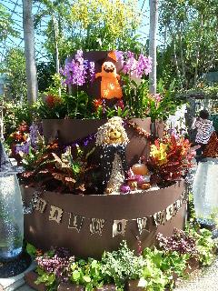
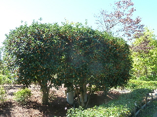
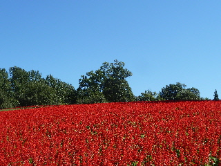
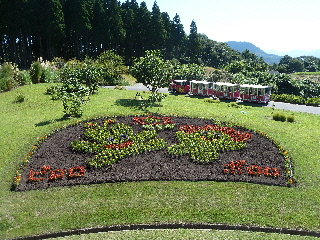
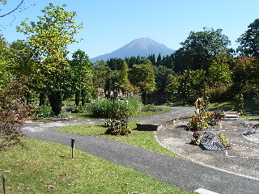
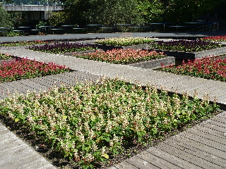

花回廊に初めて行きました。
2015/09/22
有名な観光地ですが、とっとり花回廊はなかなか行く機会がなかったです。

9月ですが、早くもハロウィンの置物が沢山ありました。
非日常な感じでいいですね。

秋らしく、キンモクセイの木からいい香りがしていました。

一面のサルビアは綺麗ですね。
今の時期はサルビアがメインかー。なんかよく見る花なのでちょっとガッカリな気分でしたが、実際見てみると想像以上にいい景色でした。

フラワートレインとマスコットキャラクターの花壇です。

今日は天気が良かったので、大山も綺麗に見れました。

白いサルビアもありました。
白いいですね。家の庭にも植えようかな。